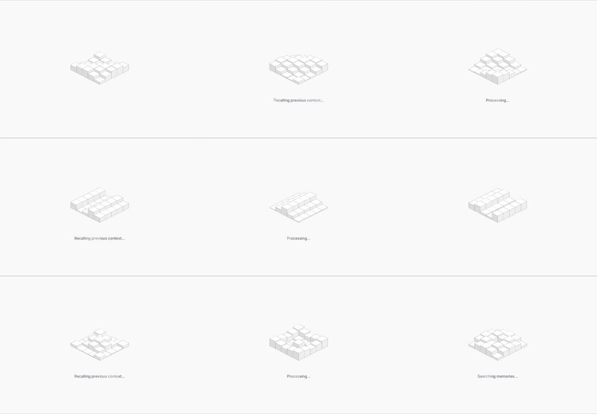

Isometric voxel thinking loader: a 4x4 grid of white isometric cubes that rise and fall in a traveling wave (like a tiny city breathing), while a status caption beneath cycles through 'Recalling previous context...', 'Processing...', 'Searching memories...'.
Media
Frame-by-frame

0-100%
Near-white scene; 16 isometric cubes (outline + top face shading) at varying heights per frame - a wave ripples across the grid (corner-to-corner), some cubes tall, some flush; caption under the loader swaps between the three status strings with a soft fade.
Build prompt
Rebuild this interaction 1:1: an isometric voxel thinking loader - a 4x4 grid of white isometric cubes that rise and fall in a traveling wave (like a tiny city breathing), while a status caption beneath cycles through "Recalling previous context...", "Processing...", "Searching memories...".
## Integration
Integration: stack-agnostic spec - springs given as stiffness/damping, timed motions as duration + curve, canvas/shader notes are perf guidance only; map every value to your framework and animation library of choice.
## Scene
Near-white scene. 16 isometric cubes (outline + top face shading) in a 4x4 diamond-oriented grid; caption in mono 12px zinc-500 beneath.
## Motion spec
Pattern: ambient loader loop.
- Wave: a sine ripple travels corner-to-corner across the grid (~2.4s period); each cube's height = wave(x, y, t); some cubes tall, some flush at any moment.
- Caption: swaps between the three status strings every ~2s with a 200ms crossfade.
- Continuous, infinite, no state change.
## Calibration
- Wave period ~2.4s corner-to-corner diagonal; axis-aligned waves read as rows blinking.
- Cube motion is smooth sine - no popping between heights.
- The three faces must stay consistent as heights change (top moves, sides stretch) - this is what keeps them reading as cubes.
## Reduced motion
Cubes hold a static mid-wave arrangement; caption still cycles (it carries information).
## Don't miss
- The wave travels diagonally corner-to-corner - this is what makes it feel organic.
- Near-white on near-white: cubes are defined by thin outlines and top-face shading only; no fills shouting.
- Caption swaps are the only text; no spinner, no percentage.
Mechanics
trigger
autoplay (async thinking state)
elements
4x4 isometric cube grid, status caption
properties
per-cube height (wave function), caption text fade